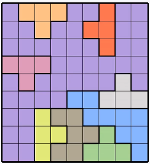
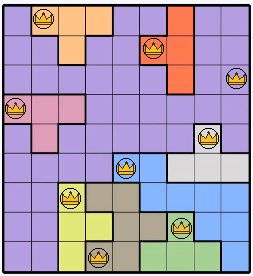

I teach computers to notice things — puzzles, box scores, race telemetry. Mostly at night, mostly with a coffee going cold next to me. Run a cell to see what came out of it.


Solve the LinkedIn Queens puzzle from a screenshot. Screenshot in, solution out. The solver is the easy half — it's a small constraint-satisfaction problem and backtracking clears any real board instantly. The interesting half was reading the board off the image without a model: crop, sample each cell's colour, cluster into regions.
I teach computers to notice things — puzzles, box scores, race telemetry. Most of it happens at night: a LinkedIn puzzle I couldn't stop thinking about, a playoff game I wanted to see the shape of, a race worth pulling apart lap by lap.
This year the plan was twelve projects, one a month. Three are officially tagged into the tape; a few more happened without asking permission to be part of it. Right now I'm on agentic RAG and reinforcement learning, which mostly means a snake is slowly getting better at a game I keep losing.